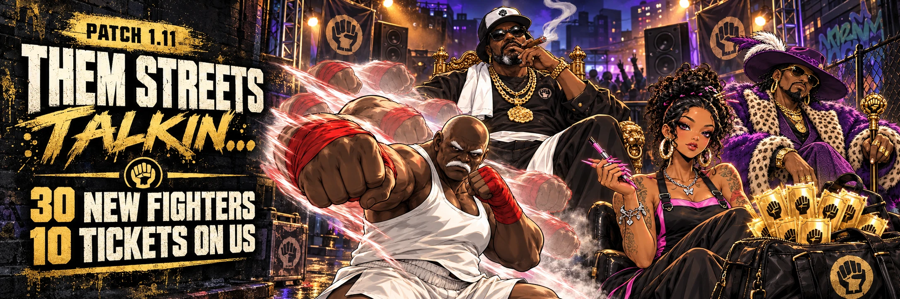
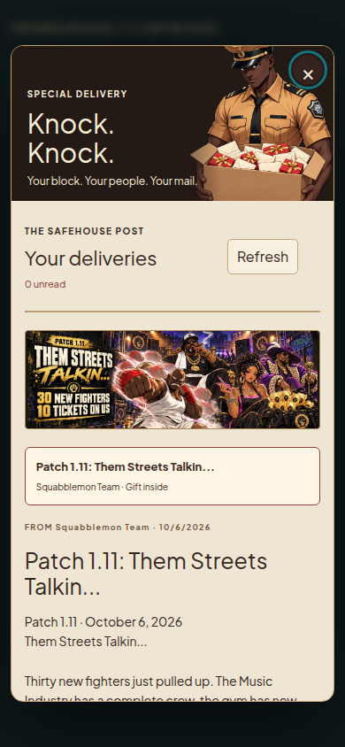
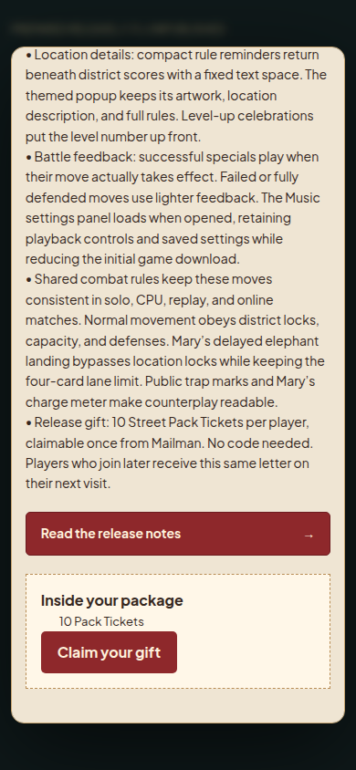
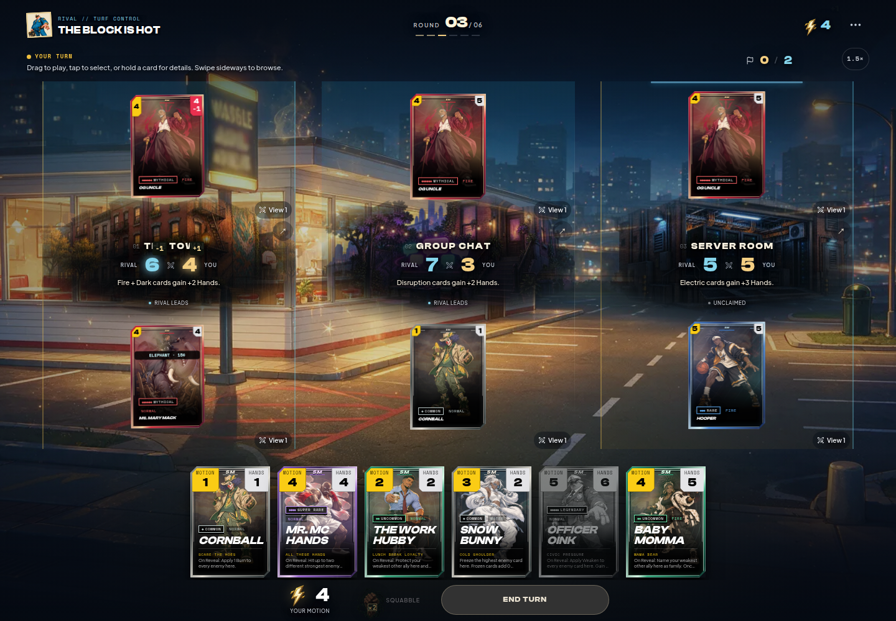
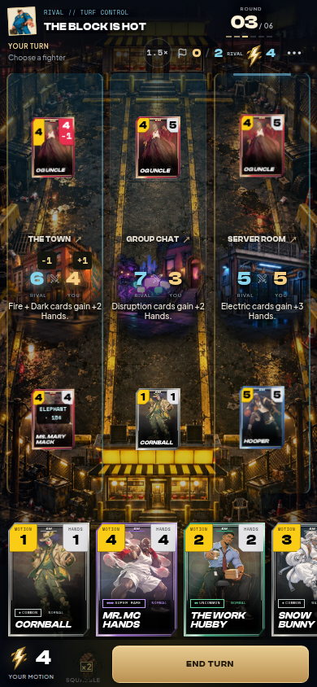
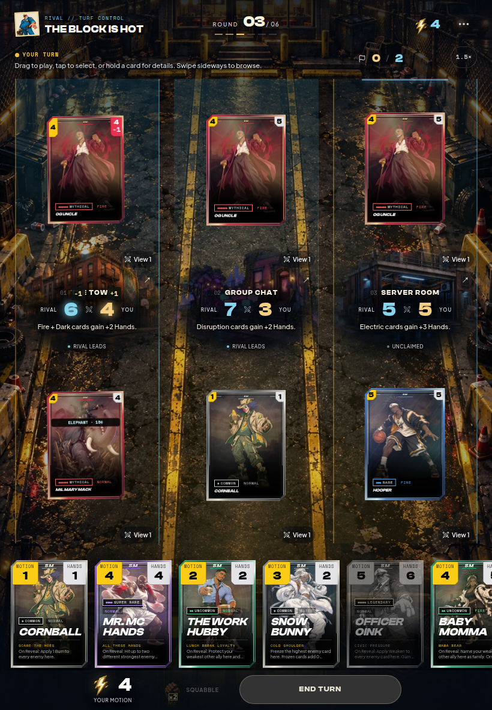
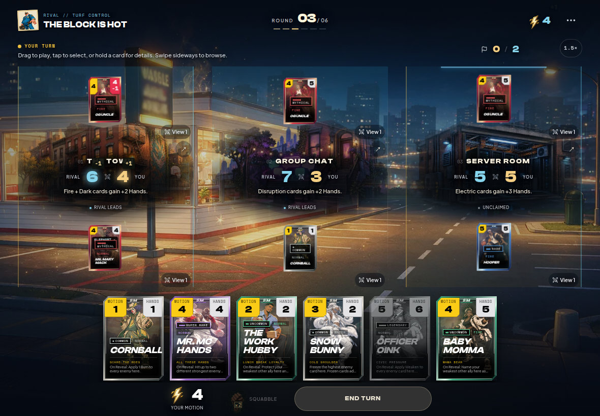

PREPARED · UNPUBLISHED · 10 TICKETS PER PLAYER
Them Streets Talkin...

Mythical Ms. Mary Mack: 2/3 → 4/4. Collect 15¢ at round end, return next round in elephant form.
Exact Mailman letter · Prepared draft · Validation and publication handoff


Mary after the transformation




Patch notes
Patch 1.11 · October 6, 2026 Them Streets Talkin... Thirty new fighters just pulled up. The Music Industry has a complete crew, the gym has new routes, and Sherlock has more ways to set you up. Claim 10 Street Pack Tickets from this letter, then find your next lineup in the Deck Workshop. The roster now has 245 fighters, plus 12 supports and 10 blockbusters. Buffs • WHO GOT THE AUX: ten new Music Industry fighters form a complete crew. Set up Soundcheck, call between districts, protect an entrance, replay an eligible performance, or cash out a 360 Deal. OG Rap Legend closes with Pass the Torch. • ONE MORE REP: Fitness Bro earns three real Reps, Fitness Girl routes and recovers injuries, Personal Trainer rewards a trainee visiting new districts, and Demon Trainer answers enemy-caused Fitness defeats. The Workshop crew includes movement tools to finish the circuit. • TAKE THE BAIT: Sherlock gets new partners. Boo Boo threatens the next arrival with a Decoy, Parole Officer punishes movement, Uncle Sam takes invested bonus Hands, and Maintenance Sage helps a restricted ally escape. Traps show their marks on the board. • RELATIONSHIP PRESSURE: Side Chick specifically weakens an enemy Baby Momma, even in another district. Work Hubby protects an ally, Crazy Ex telegraphs a delayed chase, and He Just a Friend displaces a bigger rival after a legal move. • 15 CENTS: Mythical Ms. Mary Mack starts at 2 Motion / 3 Hands. At round end she collects 3¢ per enemy card, capped at 15¢. Then she disappears and returns next round as a 4 Motion / 4 Hands elephant in your weakest district with room, bypassing location locks and hitting every enemy there for −1 Hand. Buffs and upgrades carry over; defenses apply. • Mr. Mc Hands hits two different enemies, with each strike defended separately. Pimp Swookie checks the next gain. Lash Tech uses Lash Out: land real damage first, then give another local ally +2 Hands. Fully blocked damage earns no support payout. Changes • 15 Street Legends: Boo Boo the Fool, Mr. Mc Hands, Ms. Mary Mack, Pimp Swookie, OG Uncle Harley Davidson, Suga Mama, Side Chick, Gas Station Window Wiper, Parole Officer, The Work Hubby, The Guy She Told You Not to Worry About, Crazy Ex-Boyfriend, Uncle Sam, Apartment Maintenance Sage, and The Bail Bonds Auntie. • 10 Music Industry fighters: The Opening Act, The DJ, The Hype Man, The Manager — Nice, The Rapper, The Janky Promoter, The Local Celebrity, The Battle Rapper, The Manager — Evil, and The OG Rap Legend. • 4 Fitness fighters and 1 Beauty fighter: Fitness Bro, Fitness Girl, Personal Trainer, Demon Trainer, and Lash Tech. Lash Tech is her own character. Nail Tech keeps her original portrait, Fresh Set move, ownership, upgrades, story appearances, and cosmetics. • All 30 new fighters have individual transparent portraits, progression, and distinct move signatures and emblems. New training bonuses require a real successful base-kit effect; copies and returns keep their spent limits. • Battle readability: larger mobile hand cards, brighter location art, clearer scores, and one play guide that starts at the selected card. Hand and location art no longer sit inside heavy background containers. • Desktop and iPad: battlefield wallpaper fills the whole board again. The turn timer, speed control, and skip control keep their proper layout across screen sizes and both tablet orientations. • Location details: compact rule reminders return beneath district scores with a fixed text space. The themed popup keeps its artwork, location description, and full rules. Level-up celebrations put the level number up front. • Battle feedback: successful specials play when their move actually takes effect. Failed or fully defended moves use lighter feedback. The Music settings panel loads when opened, retaining playback controls and saved settings while reducing the initial game download. • Shared combat rules keep these moves consistent in solo, CPU, replay, and online matches. Normal movement obeys district locks, capacity, and defenses. Mary’s delayed elephant landing bypasses location locks while keeping the four-card lane limit. Public trap marks and Mary’s charge meter make counterplay readable. • Release gift: 10 Street Pack Tickets per player, claimable once from Mailman. No code needed. Players who join later receive this same letter on their next visit.